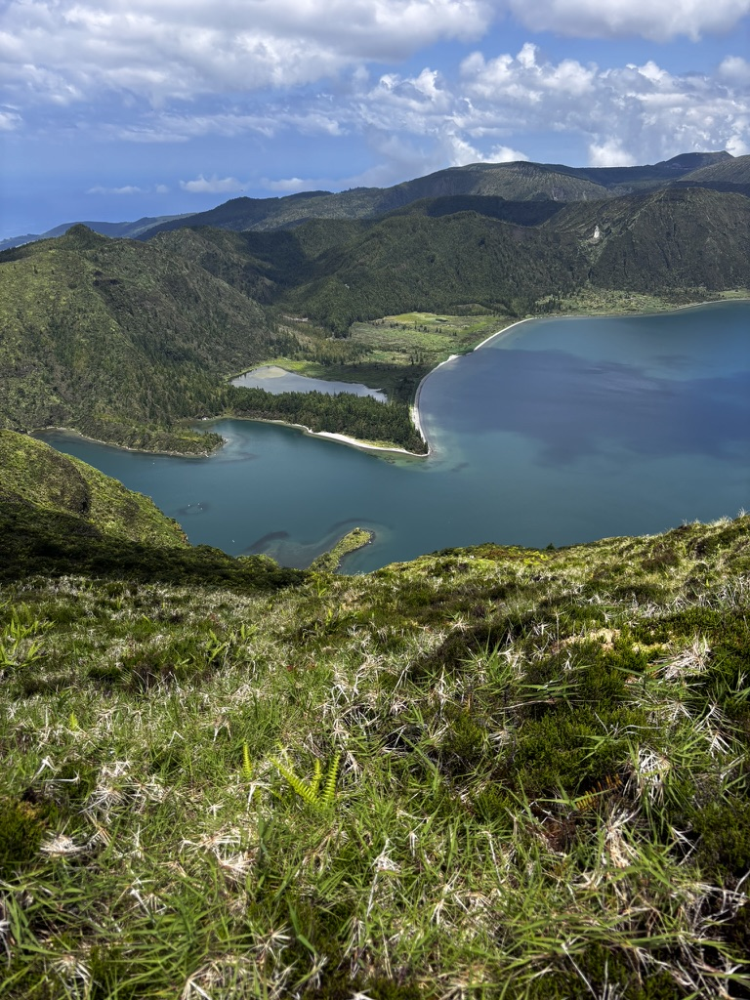
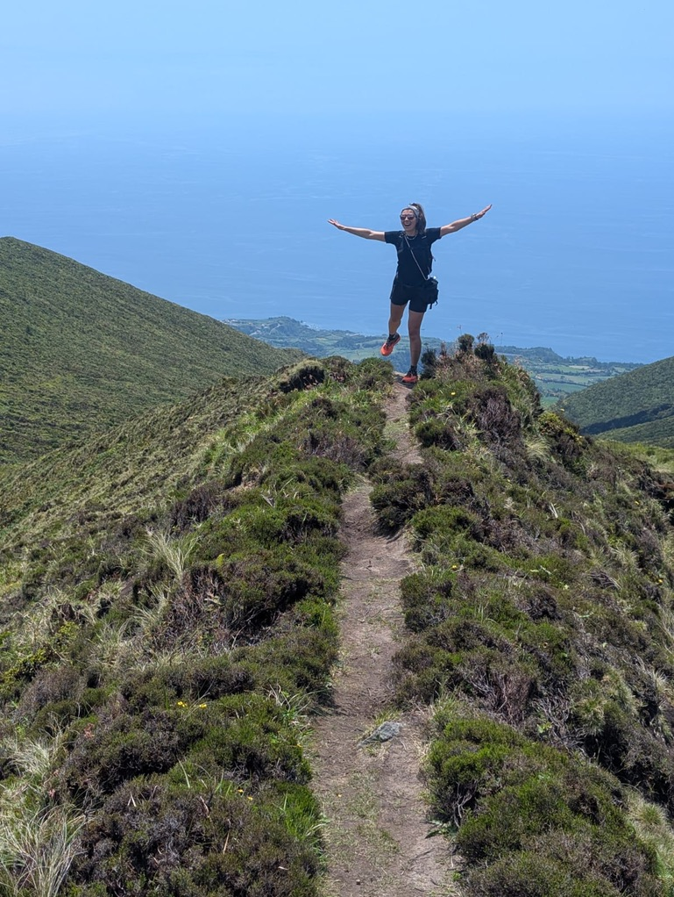
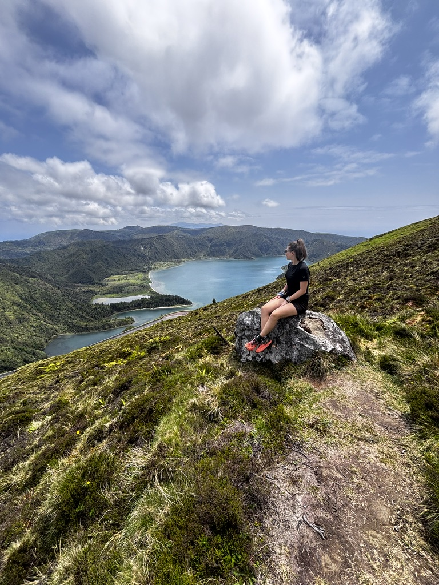
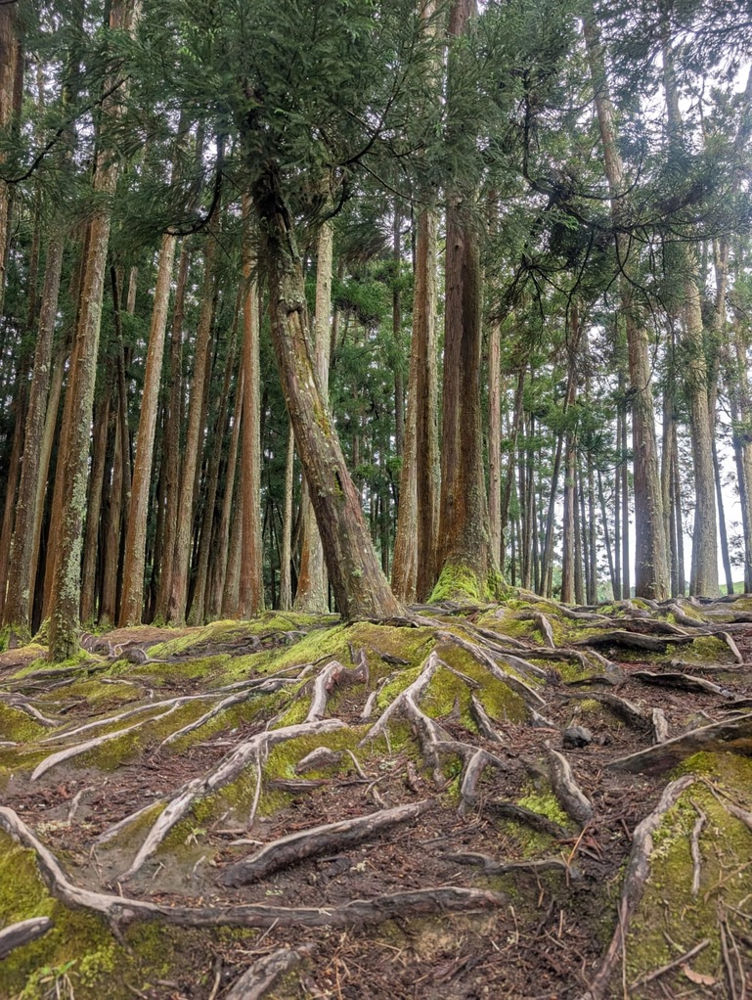
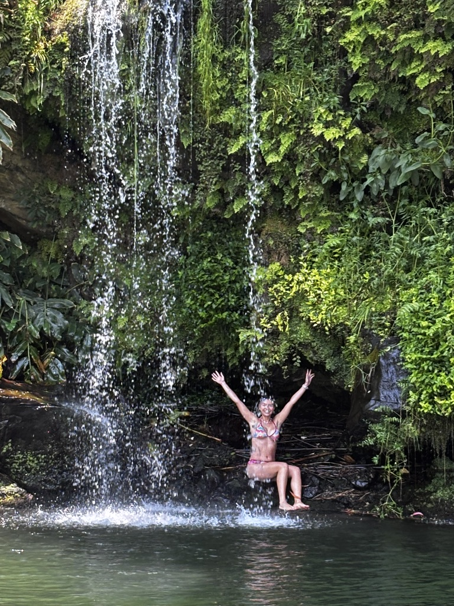
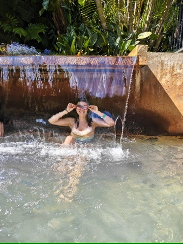
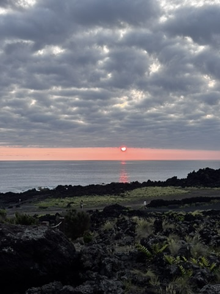

Some days in the Azores are scheduled. You look at a map, you pick a trailhead, you start walking. Other days just happen — one thing leads to another and by the end you've covered more ground, internally and otherwise, than you expected when you laced up your boots.
This was one of the second kind.
Going up
The hike started the way most hikes start — uphill, lungs adjusting, the brain still running through the list of things it was supposed to think about today. And then, as always happens if you keep going, it stopped. The list disappeared. There was only the path and the effort and the slow revelation of what was waiting at the top.

The view from the top. No description does it. You have to be standing there.
The Azores does something to you at altitude. The island is small but the views from the ridges are enormous — you can see the ocean on both sides, the crater lakes below, the clouds moving in from the Atlantic like they're in a hurry. It makes you feel, in the most uncomplicated way, very small and very alive at the same time.

I believe I can fly. Standing on this ridge, arms out, island below — I genuinely believed it for a moment.
Sitting still
After the ridge, I found a spot and sat. Not because I was tired — because there are places that ask you to stop moving, and this was one of them. The island spread out in every direction. The wind was there but soft. Nothing required anything from me.

Chilling. Part of majestic nature. Sometimes you just sit in it and let it be what it is.
I sat for longer than I usually allow myself. In that time, I watched three clouds form, move, and dissolve. I watched a bird use the wind without moving its wings. I thought about nothing in particular and everything in general, which is the closest I get to meditation and seems to work just as well.
The roots
On the way back down, I stopped at a tree. Old, large, roots spreading across the ground in every direction. The roots were exposed and tangled and they looked like a map of something — connections, routes, the underside of the forest that you never see because it's always underground.

It's all connected. The roots know. They've always known. We just don't see it until someone digs around a bit.
I stood there for a while, looking at the roots. There is something about seeing the actual infrastructure of a living thing — the part that does the work, underground, unseen — that puts things in perspective. The tree above is the visible result of a vast network that goes in every direction. Most of it is invisible. Most of what matters usually is.
The waterfall
Later in the day, there was a waterfall. The plan was to look at it from the bank. The plan changed, as plans do in the Azores, the moment I was close enough to see that swimming toward it was clearly the only reasonable option.

Swam towards a waterfall. Cold. Loud. Worth getting the boots wet.
The cold water is always a shock no matter how many times you've done it. Your body objects loudly and briefly, and then it stops objecting and starts cooperating, and by the time you reach the waterfall you are so awake and so present that the idea of being anywhere else seems genuinely incomprehensible.
I floated on my back for a while, the falls above me, the sky above that. The Azores has a specific quality of light in the afternoon — golden and soft in a way that makes everything look like a painting of itself. From the water, looking up, it was almost too much.
Thermal water
After a hike and a cold waterfall, the logic of finding thermal water somewhere is undeniable. The Azores makes this easy. The island is volcanic and the heat is right there under everything — in the springs, in the pools, in the steam that rises from the ground in certain places as if the island is breathing.

Thermal water after a long day. The muscles say thank you. The mind goes quiet. Perfect.
You float in thermal water differently than in regular water. The heat does something to the body — relaxes it at a level that's deeper than just the surface. After a full day of altitude and cold swimming, the warmth felt like being returned to something. Like a reset.
The sunset
By the time I got back to Sao Miguel town, the sun was going down. The Azores sunsets are unhurried. They take their time, moving through colours slowly, giving you every stage — the gold, the orange, the deep red at the edge, and then the blue that comes after when the light is almost gone but not quite.

The sunset over Sao Miguel. The island saves the best for last, every time.
I sat and watched it until it was done. The whole thing — from the first gold to the last colour. I thought about the tree roots. About the connections that are always there, underground, doing their work whether you can see them or not.
The island teaches you things if you slow down enough to let it. That day, I slowed down enough.